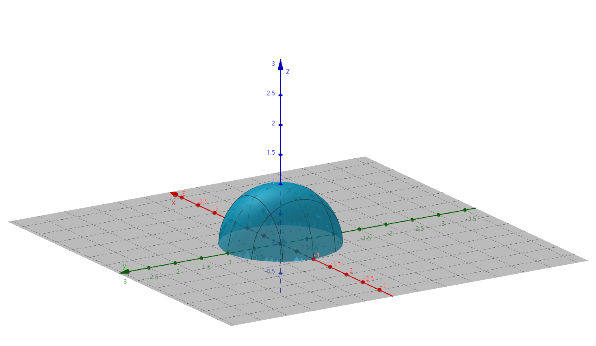

§8.1 多元函数的基本概念
一、平面点集
R2E={(x,y)∣x∈R且y∈R}={(x,y)∣x与y具有性质/关系Q}
邻域
P0(x0,y0)
- U(P0,δ)={P∣∣P0P∣<δ}
- U(P0)={(x,y)∣(x−x0)2+(y−y0)2<δ}
- U∘(P0,δ)【U∘(P0)】={P∣0<∣PP0∣<δ}={(x,y)∣0<(x−x0)2+(y−y0)2<δ}
内点、外点和边界点
∀P0∈R2,E⊆R2，P0 和 E 具有
- 内点：∃U(P0,δ),U(P0,δ)⊂E
- 外点：∃U(P0,δ),U(P0,δ)∩E=∅
- 边界点：∀U(P0,δ)，既有E的点又有不属于E的点，其全体为 ∂E
E的内点一定属于E，E的外点一定不属于E，E的边界点可能属于E。
例子
E={(x,y)∣1≤x2+y2<2}
- 内点集合 E1={(x,y)∣1<x2+y2<2}
- 外点集合 E2={(x,y)∣x2+y2<1或x2+y2>2}
- 边界点集合 ∂E={(x,y)∣x2+y2=1或x2+y2=2}
聚点和孤立点
- 聚点：∀δ>0，U∘(P0,δ) 内总有E的点
- 孤立点：∃δ>0，U(P0,δ)∩E={P0}
例子
E={(x,y)∣x2+y2≤1}∪{(2,2)}
内点集合 E1={(x,y)∣x2+y2<1}
∂E={(x,y)∣x2+y2=1}∪{(2,2)}
聚点集合 E′={(x,y)∣x2+y2≤1}，孤立点是E的边界点
开集和闭集
例子
- E={(x,y)∣x2+y2<1} 是开集
- E={(x,y)∣x2+y2≤1} 不是开集
- R2={(x,y)∣x∈R且y∈R} 是开集也是闭集
有界集和无界集
- 有界集：∃δ>0,E⊂U(O,δ)，O为原点
- 无界集：非有界集
“有界、无界”和”开集、闭集”无必然联系
连通集和非联通集
- 联通集：点集E内任何两点都可以用属于E的折线连接起来
- 非联通集
开区域和闭区域
- 开区域：联通的开集
- {(x,y)∣x>1}，开区域
- {(x,y)∣∣x∣>1}，开集，非开区域
- 闭区域：开区域连同其边界
- 如 {(x,y)∣x≥1}
二、多元函数的定义
定义：非空点集 D⊆Rn，映射 f:D→R 称为定义在 D 上的n元函数，u=f(x1,x2,⋯,xn)，D 称为定义域
- 二元函数：u=f(x,y) 或 z=f(x,y)，空间曲面 f(x,y,z)=0
例
z=1−x2−y2，D:{(x,y)∣x2+y2≤1}

三、多元函数的极限
二元函数 f(x,y) 在 U∘(P0) 有定义（P0 为聚点），∀ϵ>0，∃δ，当 0<(x−x0)2+(y−y0)2<δ 时，恒有 ∣f(x,y)−A∣<ϵ 成立。记 A=(x,y)→(x0,y0)limf(x,y)=x→x0,y→y0limf(x,y)=P→P0limf(P)
注：(x,y)→(x0,y0)limf(x,y)=y→y0limx→x0limf(x,y)=x→x0limy→y0limf(x,y)
若 (x,y)→(x0,y0)limf(x,y)【ϕ1趋向】=(x,y)→(x0,y0)limf(x,y)【ϕ2趋向】，则 f(x,y) 在 P0(x0,y0) 极限不存在
例题
-
求 (x,y)→(0,0)lim(x2+y2)sinx2+y21
解：
法一：令 t=x2+y2，t→0+lim0t有界sint1=0
法二：ϵ−δ 定义。∀ϵ>0,∃δ，当 (x−0)2+(y−0)2<δ 时，∣(x2+y2)sinx2+y21∣≤x2+y2<δ2=ϵ
取 δ=ϵ 可使原式成立
-
求 (x,y)→(0,0)lim(xsiny1+ysinx1)
解：原式 =(x,y)→(0,0)limxsiny1+(x,y)→(0,0)limysinx1=0+0=0
证明：∀ϵ>0,∃δ,0<(x−0)2+(y−0)2<δ
有
∣xsiny1+ysinx1−0∣≤∣xsiny1∣+∣ysinx1∣≤∣x∣+∣y∣≤2x2+y2<2δ=ϵ
取 δ=2ϵ 可使原式成立
-
求 (x,y)→(0,0)limx2+y22xy
解：
y=kx(x,y)→(0,0)limx2+y22xy=x→0limx2+k2x22xkx=k2+12k
与k有关，故极限不存在
-
求 (x,y)→(0,0)limx2+y22x2y
解：由夹逼定理得知
0≤x2+y22x2y≤2∣x∣∣y∣2∣x∣2∣y∣=∣x∣
∴(x,y)→(0,0)limf(x,y)=0
-
求 (x,y)→(0,0)lim(x2+y2)xy
解：夹逼定理
0≤∣xyln(x2+y2)∣≤2x2+y2ln(x2+y2)
原式 =(x,y)→(0,0)limexyln(x2+y2)=1
-
求 (x,y)→(0,0)limx4+y2x2y
解：y=kx2(x,y)→(0,0)limf(x,y)=1+k2k，与k有关，所以极限不存在
-
求 (x,y)→(0,0)limx2+y2(∣x∣+∣y∣)3
解：
法一：夹逼定理
0≤x2+y2(∣x∣+∣y∣)3≤x2+y2(2x2+y2)3≤8x2+y2
原式=0
法二：x=ρcosθ，y=ρsinθ
原式 =ρ→0+limρ2ρ3(∣cosθ∣+∣sinθ∣)3=ρ→0+lim无穷小ρ有界(∣cosθ∣+∣sinθ∣)3=0
四、多元函数连续性
二元函数连续性：若 (x,y)→(0,0)limf(x,y)=f(x0,y0)，则称 z=f(x,y) 在 P0(x0,y0) 连续，否则间断
(x,y)→(x0,y0)lim=[f(x,y)−f(x0,y0)]=0
f(x,y)−f(x0,y0)=f(x0+Δx,y0+Δy)−f(x0,y0)
全增量 z=f(x,y)，(Δx,Δy)→(0,0)limΔz=0
例题
-
f(x,y)=x2+y22xy 在 (0,0) 连续性如何？
解：定义域D：{(x,y)∣x2+y2=0}
f(x,y)=⎩⎨⎧x2+y22xy不存在(x,y)=(0,0)(x,y)=(0,0)
∴ 在 (0,0) 间断
-
f(x,y)=x2+y22x2y 在 (0,0) 连续性如何？
解：D：{(x,y)∣x2+y2=0}
f(x,y)=⎩⎨⎧x2+y22x2y0(x,y)=(0,0)(x,y)=(0,0)
∴ 在 (0,0) 连续
-
f(x,y)=⎩⎨⎧yxcosx1,x=00,x=0 在 (0,1) 的连续性如何？
解：f(0,1)=0
当 x=0 时，(x,y)→(0,1)limf(x,y)=0
x=0 时，(x,y)→(0,1)lim0xy有界cosx1=0
∴(x,y)→(0,1)limf(x,y)=f(0,1)，连续
-
x→0,y→0limx2+y2=02+02=0
连续函数性质
对于有界闭区域上的二元连续函数，有如下性质
- 【有界性和最值性定理】f(P) 在有界闭区域 D 上连续 ⇒∃M>0,∀P∈D,∣f(P)∣≤M，∃P1,P2∈D,f(P1)=max{f(P)∣P∈D} ，f(P2)=min{f(P)∣P∈D}
- 【介值定理】∀μ∈[m,M],∃P⊆D 使得 f(P)=μ（m为最小值，M为最大值）
- 【一致连续】∀ϵ>0,∃δ>0,∀P1,P2∈D，只要 ∣P1P2∣<δ，就有 ∣f(P1)−f(P2)∣<ϵ